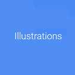
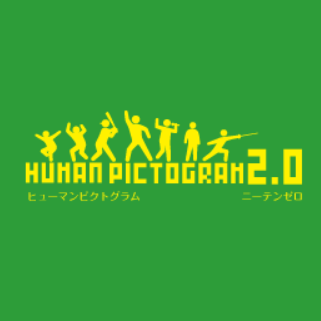
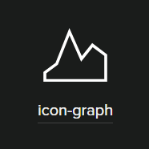

图片素材网站收藏
Iconfont阿里巴巴矢量图标库
3700000+的图标供君选择：无论是生活化的甜甜圈、还是蹭节日热点的圣诞树，亦或是商务需求的数据量表图标……没有搜不到，只有想不到。图标风格清新简约，提供的下载格式多样、颜色还可选。
pngimg.com
Ithas 60000 free PNG images。而且new png images还在陆续设计和上传，像其他网站一样，还free。这个png网站按照类别排列去背图，有animals、有nature、有food、还有vegetables……和阿里巴巴图标库不同的是，这个网站提供的去背图大部分是实物
unDraw
‘’不断更新的美丽svg图像集合，君可完全免费使用，无需归属‘’。这句slogan的韵脚好熟悉。“8848钛金手机、致敬成功”？可能是专为网站设计师提供服务的team，拉开（unDraw的中文名）的图标更加扁平化，而且可以通过色彩搭配来匹配你的需求。
human pictogram 2-人类形象图形2.0
和其它图标、去背景网站不同的是，人类形象图形网站专注分享非常人性化的人物动作、形象、神态标识，图像的视觉识别度很高，很容易理解其图案表达的含义。
standart.io
如果说人类形象图形的开发者是一位怪蜀黍，那http://standart.io这个网站的背后绝对是一群理工男，还是穿格子衫的理工男。整篇网站黑色背景，白色图标，或许是觉得太单调，中间设计了几组粉色图标。嗯，小伙砸，good job。